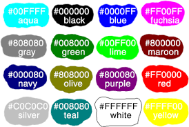

1. ¿Qué son los colores hexadecimales y para qué sirven?
Los códigos de color hexadecimales son valores que le indican a
la pantalla cuánto color mostrar. Los valores son un código especial
que representa valores de color de 0 a 255. Si rojo, verde y azul
están todos en el mínimo de 0 (representado como «00» en el código),
el color expresado es el color negro.
GARCÍA ACOSTA MIGUEL CHARBEL
2. ¿Qué son los colores web?
El color es el medio esencial para tocar las emociones de los visitantes
de tu sitio web pues crea una reacción física y emocional en los espectadores.
Los colores son capaces de establecer el tono adecuado para llevar el mensaje
a los visitantes: pueden calmar, excitar, estimular a las acciones.
GARCÍA ACOSTA MIGUEL CHARBEL
3. ¿Qué es el círculo cromático? Busca una página web en donde puedas consultar
los colores del círculo cromático para web y escribe el enlace en tu página.
El círculo cromático o rueda de colores es una representación ordenada y circular
de los colores de acuerdo con su matiz o tono, en donde se representa a los colores
primarios y sus derivados. Su uso es compatible tanto con los modelos Síntesis sustractiva
de color, como con los modelos Síntesis aditiva de color. Página de Información.
4. ¿Cuál es la etiqueta para establecer color de fondo en una página?
< body bgcolor="" >
S. Asigna un color de fondo en tono pastel.
6. Cambia el color del texto a fuente Arial color morado.
7. Crea una lista ordenada con números para mencionar 10 colores diferentes
cada uno en sistema hexadecimal y en sistema RGB.
GARCÍA ACOSTA MIGUEL CHARBEL
- Rojo
- Morado
- Verde
- Azul
- Rosa
- Violeta
- Lila
- Naranja
- Café
- Marron
8. Inserta por lo menos 4 imágenes que ilustren las preguntas 1 a 4 y una
línea de color diferente después de contestar cada punto que aquí se pide.

GARCÍA ACOSTA MIGUEL CHARBEL
9. Escribe las fuentes de donde obtienes la información.
1.
3.
GARCÍA ACOSTA MIGUEL CHARBEL
10. Escribe tu nombre varias veces en diferentes líneas del código de la página
y revisa que esté cerrado correctamente el código de todas las etiquetas que llevan
cierre.